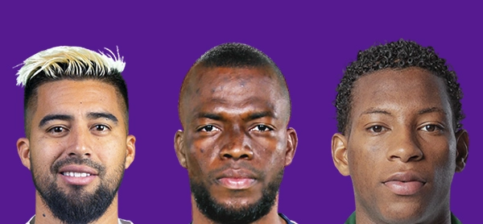
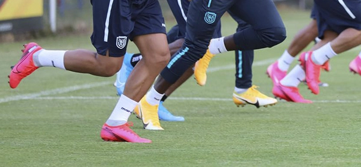
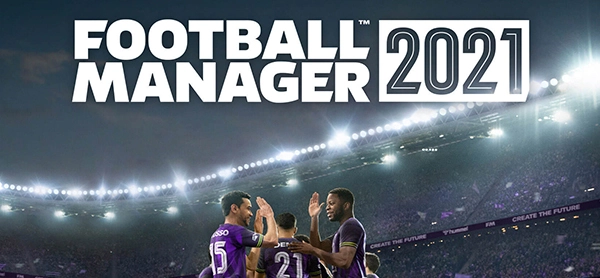

Cómo instalar los packs gráficos
Te mostramos cómo instalar faces y logos paso a paso.

Guía para elegir equipo para tu partida
Escoger un club puede ser una tarea compleja. Aquí, la solución.

Cómo adquirir Football Manager
Listamos los sitios donde se puede comprar Football Manager 2021 de forma oficial.